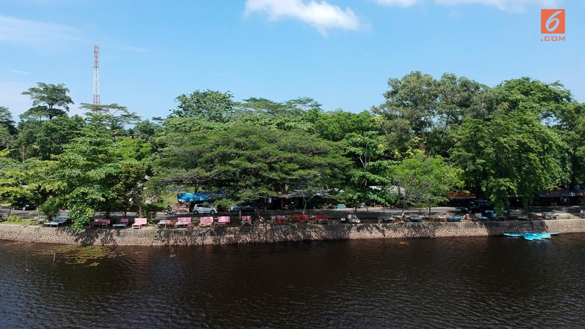

Diposting Oleh Liputan6.com, Yusron Fahmi, Raden Trimutia Hatta

Liputan6.com, Jakarta - World Travel & Tourism Council (WTTC) menyebut pertumbuhan Pariwisata Indonesia menjadi yang tercepat ke-9 di dunia. Pencapaian tersebut diungkap Menteri Pariwisata Arief Yahya.
"Indonesia merupakan negara dengan pertumbuhan pariwisata tercepat nomor 9 di dunia, di Asia nomor 3 dan ASEAN nomor 1," kata Arief dalam keterangan tertulisnya, Rabu (24/10/2018).
Perusahaan media di Inggris The Telegraph mencatat Indonesia sebagai salah satu dari 20 negara dengan pertumbuhan pariwisata tercepat. "Bahkan mereka menilai pertumbuhan pariwisata Indonesia empat kali lebih tinggi dibanding pertumbuhan regional dan global. Data memang membuktikan klaim tersebut," ujar Arief.
Pertumbuhan pariwisata Indonesia dalam beberapa tahun terakhir mencapai 25,68%, sementara industri plesiran di kawasan ASEAN hanya tumbuh 7% dan di dunia hanya 6%.
Indeks Daya Saing Pariwisata Indonesia menurut World Economy Forum (WEF) juga menunjukkan perkembangan menggembirakan. Peringkat Indonesia naik 8 poin dari posisi 50 di 2015 menjadi 42 pada 2017.
Arief melanjutkan bahwa pertumbuhan sektor pariwisata melaju pesat 22% pada 2017, menempati peringkat kedua setelah Vietnam (29%). Di tahun yang sama rata-rata pertumbuhan sektor pariwisata di dunia 6,4% dan 7% di ASEAN.
"Pariwisata Vietnam tumbuh lebih baik mencapai 29% karena melakukan banyak deregulasi. Sedangkan Malaysia tumbuh 4%, begitu pula Thailand," lanjut Arief Yahya.
========================================2 dari 3 Halaman======================================
Penerima devisa dari sektor pariwisata juga terus meningkat sejak 2015. Sumbangan devisa meningkat dari US$ 12,2 miliar di 2015 menjadi US$ 13,6 miliar di 2016, dan kembali meningkat menjadi US$ 15 miliar di 2017. Tahun ini, industri pariwisata ditargetkan meraup devisa sebesar US$ 17 miliar dan US$ 20 miliar di 2020.
Kunjungan wisatawan mancanegara (wisman) juga mengalami kenaikan siginifikan pada periode 2015-2017. Jumlah wisman di 2016 naik dari 9,7 juta menjadi 11,5 juta, dan bertambah 2,5 juta menjadi 14 juta di tahun 2017.
Pertumbuhan total kunjungan Wisman Indonesia tahun 2017 sebesar 22% lebih tinggi daripada regional ASEAN (7%) dan dunia (6,4%). Hingga Agustus 2018, jumlah wisman mencapai 10,58 juta dari target 17 juta.
"Wisatawan nusantara juga terus naik. Sejak tahun 2015 sebanyak 255 juta, tahun 2016 berkembang lagi menjadi 264 juta, dan tahun 2017 meningkat lagi menjadi 271 juta," papar Arief.
Sektor pariwisata berkomitmen untuk menjadi penyumbang devisa nomor 1 mengalahkan sektor perekonomian lain. Ranking Index Pariwisata Indonesia yang disampaikan oleh WTTC mengalami kenaikan secara konsisten, dari ranking 70 di tahun 2013, melonjak tajam ke ranking 50 di tahun 2015, dan naik ke ranking 42 di tahun 2017.
"Pariwisata Indonesia secara konsisten terus meraih penghargaan di level internasional, di antaranya adalah 46 penghargaan di 22 negara di tahun 2016, 27 penghargaan di 13 negara di tahun 2017, dan 31 penghargaan di 9 negara sampai kwartal 3 di tahun 2018," papar Arief.
========================================3 dari 3 Halaman======================================
Presiden Jokowi juga mendukung komitmen Kementerian Pariwisata. Dukungan itu ia sampaikan melalui video berdurasi satu menit yang diputar di awal konferensi pers.
"Diharapkan pada tahun 2020 bisa melampaui CPO (minyak sawit mentah), ini menjadi motor penggerak perekonomian Indonesia. Dan yang paling kita senangi, pariwisata ini bisa menetes sampai ke bawah efeknya," harap Jokowi diiringi tepuk tangan riuh rekan media yang hadir.
Konferensi pers itu dihadiri oleh jajaran Kabinet Kerja lainnya, di antaranya Menko Perekonomian Darmin Nasution, Menteri Perdagangan Enggartiasto Lukita, Menteri Komunikasi dan Informatika Rudiantara, Menteri Pekerjaan Umum dan Perumahan Rakyat Basuki Hadimuljono, dan Menteri Kelautan dan Perikanan Susi Pudjiastuti, Menteri Keuangan Sri Mulyani, dan Menteri Perindustrian Airlangga Hartarto. Acara dipimpin oleh Kepala Kantor Staf Presiden Moeldoko dan Moderator Ahmad Erani Yustika.